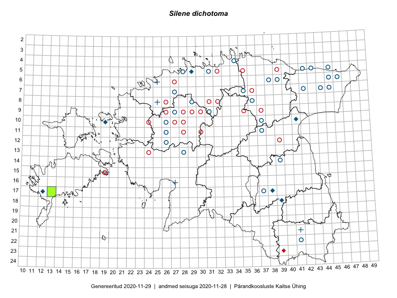

Silene dichotoma
Uuendatud: 2016-12-01
Kaardile koondatud taksonid: Silene dichotoma Ehrh.

Kaart põhineb 11 kirjel.
Viited andmebaasikirjetele
- Rein Kalamees, Kersti Püssa: 2015-06-30: 04-31: ala
- Toomas Kukk, Tiit Hallikma: 2015-06-01: 07-45: ala
- Rein Kalamees, Kersti Püssa: 2015-05-27: 05-30: ala
- Rein Kalamees, Kersti Püssa: 2015-05-29: 04-38: ala
- Rein Kalamees, Kersti Püssa: 2015-08-24: 04-37: ala
- Rein Kalamees, Kersti Püssa: 2015-06-02: 04-34: ala
- Rein Kalamees, Kersti Püssa: 2015-05-15: 03-33: ala
- Toomas Kukk, Kersti Tambets, Timo Luhamäe, Janika Sammasto, Sten Mander: 2014-07-30: 21-45: GPS punkt
- Mari Reitalu, Oliver Parrest: 2015-08-12: 17-13: ala
- Erkki Otsman, Sergei Smirnov: 2016-06-17: 05-43: ala
- Peedu Saar, Timo Luhamäe, Johannes Kõdar: 2016-07-04: 16-22: ala